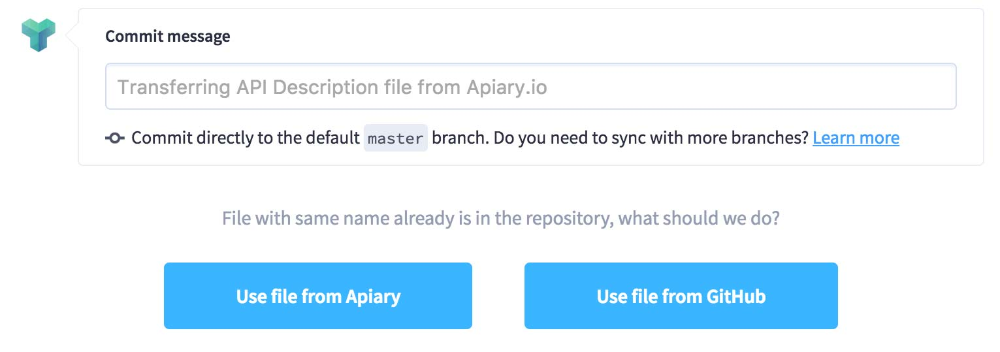

GitHub Sync
Keep your API Description in sync with your implementation and make it available to anyone with access to the repository.
We feel it’s important to keep your API Description file alongside your code so that you can use tools like Dredd to ensure your implementation is up-to-date with your API documentation. Because many use GitHub to store their code and documentation, Apiary allows for syncing with GitHub to go alongside your day-to-day workflow and fit into your continuous integration process.
Apiary also supports branching, custom file names and Git Flow as part of a GitHub Integration
Getting Connected with GitHub Sync
The first step to use this feature is to connect your Apiary account with your GitHub account. This allows Apiary to commit the stored API Description file to your repository and to listen for changes to that file. You can connect your account two ways:
- Navigate to your account page and click “Connect” under the GitHub section.
- Visit the “Settings” page for an API, scroll to the GitHub section, and grant us access to your repositories
If you want Apiary to be able to commit to and listen to private repositories, you will need to grant access for that when connecting your account to GitHub.
We have a dedicated section on troubleshooting GitHub Sync.
Syncing an API
Once your Apiary account is connected to you GitHub account, you can sync up an API by visiting the “Settings” page for that API.
You need to be the repository owner or admin to connect it with your API Project (Apiary adds a webhook and needs elevated permissions to do that).
At the “Settings” page, you will see a list of your repositories that has been pulled from GitHub.
Select the repository with which you want to sync. A check will be made to see if there is a matching file there already, which can happen when you sync and disconnect with a repository. If a match is found, you’ll be asked if you want to pull the file down from GitHub, or if you want to overwrite GitHub’s file with the one stored at Apiary.

Making Changes to your API Description
Now that you’re syncing with GitHub, you can now commit directly to GitHub from the Apiary editor. When you’re ready to commit your changes, click “Save & Commit” from the editor screen and you’ll be prompted for a commit message (just like when using git commit). When ready, click the button to save and push to GitHub, and your changes will be pushed.
Additionally, since Apiary is listening for changes to the API Description file, any commit made on GitHub will be pulled down to Apiary. By default, Apiary listens only to the default branch of a repository (usually master), so only commits or merges made there will be pulled.
You can also make local changes by clicking “Save” instead of “Save & Commit”.
If there are uncommitted changes and, at the same time, a change is made to the file in the GitHub repository, the uncommitted changes in Apiary will be lost and overwritten by the changes from the GitHub repository.
Disconnecting
If you wish to no longer sync with GitHub, click the “Disconnect” button on the “Settings” page and Apiary will remove the hook from GitHub and stop committing to the repository. The file will not be deleted from GitHub.
Repository changes
Apiary does not listen for repository changes (switch from public to private, changing the default branch). If you need the changes to propagate, disconnect and reconnect your API project.